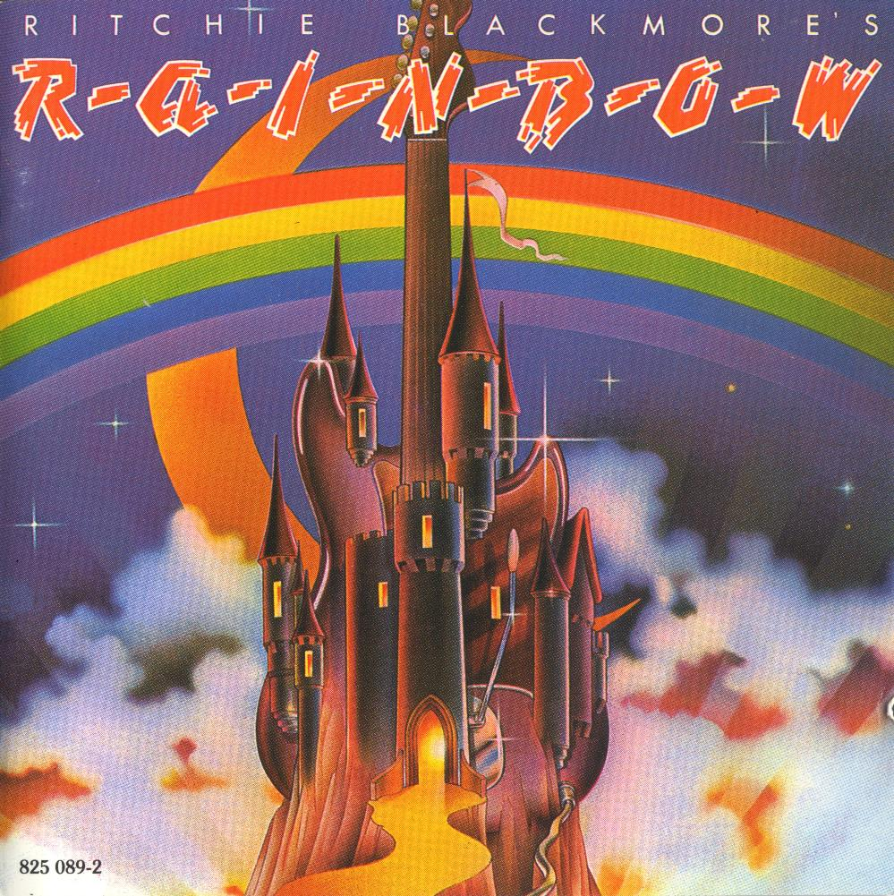

DISCOGRAFIA
O Rainbow possui vários lançamentos ao longo de toda a sua carreira. Nesta página você pode conferir os principais
álbuns de estúdio e ao vivo da banda.
ESTÚDIO

TRACKLIST
- Man on the Silver Mountain
- Self Portrait
- Black Sheep of the Family (Quatermass Cover)
- Catch the Rainbow
- Snake Charmer
- The Temple of the King
- If You Don't Like Rock 'n' Roll
- Sixteenth Century Greensleeves
- Still I'm Sad (The Yardbirds cover)
Lançamento: 4 de agosto de 1975
Selo: Polydor Records
Singles: Still I'm Sad/Temple of the King, Man on the Silver Mountain/Snake Charmer
Selo: Polydor Records
Singles: Still I'm Sad/Temple of the King, Man on the Silver Mountain/Snake Charmer
TRACKLIST
- Tarot Woman
- Run with the Wolf
- Starstruck
- Do You Close Your Eyes
- Stargazer
- A Light in the Black
Lançamento: 17 de maio de 1976
Selo: Oyster Records
Singles: Starstruck/Run with the Wolf
Selo: Oyster Records
Singles: Starstruck/Run with the Wolf
TRACKLIST
- Long Live Rock 'n' Roll
- Lady of the Lake
- L.A. Connection
- Gates of Babylon
- Kill the King
- The Shed
- Sensitive to Light
- Rainbow Eyes
Lançamento: 9 de abril de 1978
Selo: Polydor Records
Singles: Long Live Rock 'n' Roll/Sensitive to Light, L.A. Connection/Lady of the Lake
Selo: Polydor Records
Singles: Long Live Rock 'n' Roll/Sensitive to Light, L.A. Connection/Lady of the Lake
TRACKLIST
- All Night Long
- Eyes of the World
- No Time to Lose
- Makin' Love
- Since You Been Gone (Russ Ballard cover)
- Love's No Friend
- Danger Zone
- Lost in Hollywood
Lançamento: 28 de julho de 1979
Selo: Polydor Records
Singles: Since You Been Gone/Bad Girl, All Night Long/Weiss Heim
Selo: Polydor Records
Singles: Since You Been Gone/Bad Girl, All Night Long/Weiss Heim
TRACKLIST
- I Surrender (Russ Ballard cover)
- Spotlight Kid
- No Release
- Magic
- Vielleicht das nachster Zeit (Maybe Next Time)
- Can't Happen Here
- Freedom Fighter
- Midtown Tunnel Vision
- Difficult to Cure (9ª Sinfonia de Beethoven ou Ode à Alegria)
Lançamento: 3 de fevereiro de 1981
Selo: Polydor Records
Singles: Can't Happen Here/Jealous Lover, I Surrender/Maybe Next Time, Magic/Freedom Fighter
Selo: Polydor Records
Singles: Can't Happen Here/Jealous Lover, I Surrender/Maybe Next Time, Magic/Freedom Fighter
TRACKLIST
- Death Alley Driver
- Stone Cold
- Bring On the Night (Dream Chaser)
- Tite Squeeze
- Tearin' Out My Heart
- Power
- Miss Mistreated
- Rock Fever
- Eyes of Fire
Lançamento: 5 de abril de 1982
Selo: Polydor Records
Singles: Death Alley Driver/Power, Power/Miss Mistreated, Stone Cold/Rock Fever
Selo: Polydor Records
Singles: Death Alley Driver/Power, Power/Miss Mistreated, Stone Cold/Rock Fever
TRACKLIST
- Stranded
- Can't Let You Go
- Fool for the Night
- Fire Dance
- Anybody There
- Desperate Heart
- Street of Dreams
- Drinking with the Devil
- Snowman
- Make Your Move
Lançamento: 24 de agosto de 1983
Selo: Polydor Records
Singles: Street of Dreams/Anybody There/Power (Live), Can't Let You Go/All Night Long (Live)
Selo: Polydor Records
Singles: Street of Dreams/Anybody There/Power (Live), Can't Let You Go/All Night Long (Live)
TRACKLIST
- Wolf to the Moon
- Cold Hearted Woman
- Hunting Humans (Insatiable)
- Stand and Fight
- Ariel
- Too Late for Tears
- Black Masquerade
- Silence
- Hall of the Mountain King
- Still I'm Sad (The Yardbirds cover)
Lançamento: 21 de agosto de 1995
Selo: RCA Records
Singles: Ariel/The Temple of the King (Live), Hunting Humans (Insatiable)/Stand and Fight/Black Masquerade
Selo: RCA Records
Singles: Ariel/The Temple of the King (Live), Hunting Humans (Insatiable)/Stand and Fight/Black Masquerade
AO VIVO
TRACKLIST
- Over the Rainbow/Kill the King
- Medley: Man on the Silver Mountain/Blues/Starstruck
- Catch the Rainbow
- Mistreated (Deep Purple cover)
- Sixteenth Century Greensleeves
- Still I'm Sad (The Yardbirds cover)
Lançamento: 7 de julho de 1977
Selo: Oyster Records
Singles: Kill the King/Man on the Silver Mountain/Mistreated (Deep Purple Cover)
Selo: Oyster Records
Singles: Kill the King/Man on the Silver Mountain/Mistreated (Deep Purple Cover)
TRACKLIST
- Spotlight Kid
- I Surrender (Russ Ballard cover)
- Miss Mistreated
- Jealous Lover (studio single)
- Can't Happen Here
- Tearing Out My Heart
- Since You Been Gone (Russ Ballard cover)
- Bad Girl (studio single)
- Difficult to Cure (9ª de Beethoven ou Ode à Alegria)
- Stone Cold
- Power
- Man on the Silver Mountain
- Long Live Rock 'n' Roll
- Weiss Ham
Lançamento: Março de 1986
Selo: Polydor Records
Singles: Bad Girl/Spotlight Kid (Live)/Man on the Silver Mountain (Live)
Selo: Polydor Records
Singles: Bad Girl/Spotlight Kid (Live)/Man on the Silver Mountain (Live)
TRACKLIST
- Intro/Kill the King
- Mistreated (Deep Purple Cover)
- Sixteenth Century Greensleeves
- Catch the Rainbow
- Long Live Rock 'n' Roll
- Man on the Silver Mountain
- Still I'm Sad (The Yardbirds cover)
- Do You Close Your Eyes
Lançamento: 12 de junho de 2006
Selo: Eagle Records
Selo: Eagle Records
TRACKLIST
- Intro/Spotlight Kid
- Too Late for Tears
- Long Live Rock 'n' Roll/Black Night (Deep Purple cover)
- Hunting Humans (Insatiable)
- Wolf to the Moon/Difficult to Cure (9ª Sinfonia de Beethoven ou Ode á Alegria)
- Solo de teclado
- Still I'm Sad (The Yardbirds cover)
- Man on the Silver Mountain
- Temple of the King
- Black Masquerade
- Ariel
- Since You Been Gone (Russ Ballard cover)
- Perfect Strangers (Deep Purple cover)
- Sixteenth Century Greensleeves
- Hall of the Mountain King
- Burn (Deep Purple cover)
- Smoke on the Water (Deep Purple cover)
Lançamento: 26 de agosto de 2013
Selo: Eagle Records
Selo: Eagle Records
TRACKLIST
- Eyes of the World (Live in Denver)
- Love's No Friend (Live in Denver)
- Since You Been Gone (Russ Ballard cover) (Live in Denver)
- All Night Long (Live in Denver)
- Lost in Hollywodd (Live in Denver)
- Man on the Silver Mountain (Live in Denver)
- Long Live Rock 'n' Roll (Live in Denver)
- Eyes of the World (Live in Long Island)
- Love's No Friend (Live in Long Island)
- Since You Been Gone (Russ Ballard cover) (Live in Long Island)
- All Night Long (Live in Long Island)
- Lost in Hollywodd (Live in Long Island)
- Man on the Silver Mountain (Live in Long Island)
- Long Live Rock 'n' Roll (Live in Long Island)
- Eyes of the World (Live in Chicago)
- Love's No Friend (Live in Chicago)
- All Night Long (Live in Chicago)
- Lost in Hollywood (Live in Chicago)
- Long Live Rock 'n' Roll (Live in Chicago)
Lançamento: 21 de agosto de 2015
Selo: Cleopatra Records
Selo: Cleopatra Records
TRACKLIST
- Highway Star (Deep Purple cover)
- Spotlight Kid
- Mistreated (Deep Purple cover)
- Sixteenth Century Greensleeves
- Since You Been Gone (Russ Ballard cover)
- Man on the Silver Mountain
- Catch the Rainbow
- Difficult to Cure (9ª Sinfonia de Beethoven ou Ode à Alegria)
- Perfect Strangers (Deep Purple cover)
- Stargazer
- Long Live Rock 'n' Roll
- Child in Time (Deep Purple cover)
- Black Night (Deep Purple cover)
- Smoke on the Water (Deep Purple cover)
- Spotlight Kid
- Man on the Silver Mountain
- Long Live Rock 'n' Roll
- Stargazer
Lançamento: 18 de novembro de 2016
Selo: Eagle Rock Entertainment
Selo: Eagle Rock Entertainment